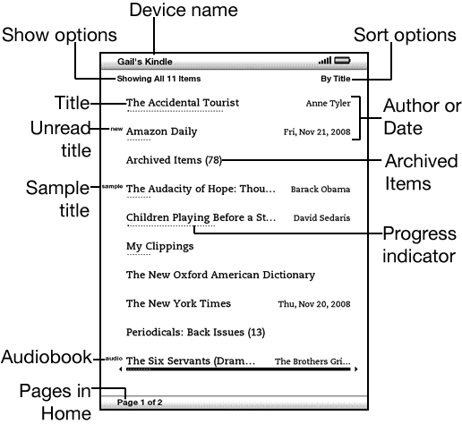
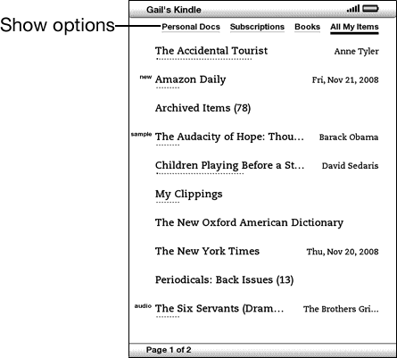
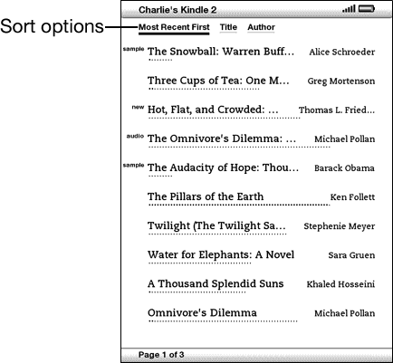
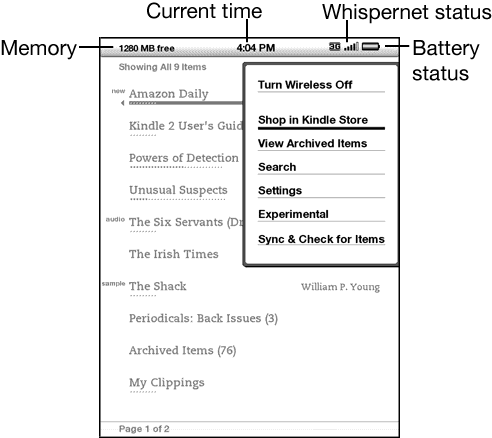

The Kindle Home screen gives you an overall picture of what you currently have on your Kindle. It shows you what has arrived recently, what you are reading, and where you are in your reading. It also allows you to remove content from your Kindle and to move content from Amazon.com to your Kindle. Read below for more details.
Your Home screen displays a list of all of your Kindle reading materials - books, newspapers, magazines, blogs, personal documents, as well as audiobooks. It serves as a personal bookshelf for all of your reading material, as well as a starting point to access other Kindle features.
To display the Home screen, press the Home button on the right edge of your Kindle. By default, the Home screen lists all of the items that you have on your Kindle beginning with the most recently viewed (or acquired) items. Each type of content has a slightly different description and label. You can read more about the types of content available in Chapter 3.
Books are shown by title and author. Below the book title are a series of dots which give you an approximation of how long the book is. Bold dots within the series indicate how far along you are in the book based on the last page you viewed.
Periodicals include newspapers and magazines that can be purchased as a single issue or as a subscription delivered on a regular basis. Your Home screen lists the most recent issue of each periodical you have on your Kindle. Older issues appear inside a grouping called Periodicals: Back Issues. Selecting the grouping takes you to a screen that displays the back issues of all the periodicals you have on your Kindle. Note that Kindle automatically deletes issues that are more than seven issues old to free up space for new content. An exclamation point next to an issue indicates that it will be deleted within 48 hours.
Blogs are subscription-based and appear on the Home screen as a single entry like books. As additional blog content arrives, it is added to the item and older entries are rolled off, much like a blog works on a computer.
Audiobooks look similar to books, but they will be labeled in the Home screen as audio content. Like regular books, they have a progress indicator that shows where you are in the audiobook.
What you see on your Home screen varies depending on what reading materials you have purchased, and how you choose to show and sort this list. The screen sample and list below explain the features that you may find on your Home screen.

Device name - the name of your Kindle. You can edit this name on the Settings screen.
Show options - choose which types of content you want displayed in Home.
Sort options - choose the order you want content displayed in Home.
Title - the title of the item.
Author or Date - for books, the author of the item is listed. For periodicals and blogs, the date is listed.
Unread title - the "new" label indicates the item has never been opened and is less than 24 hours old. Once you open a new document or more than 24 hours has passed since the item arrived on your Kindle, the "new" label is removed.
Archived Items - items stored at Amazon.com that you can re-download to your device.
Sample title - the "sample" label indicates the book is a sample. If you like it, you can purchase the full book from within the sample.
Progress indicator - the series of dots below the item shows how long the book is and bold dots show how far you have read in a particular item.
Audiobook title - the "audio" label indicates the book is an audiobook.
Pages - indicates the total number of pages in Home. Use the Next Page or Previous Page button to navigate the pages.
Periodicals: Back Issues - stores older issues of newspapers and magazines.
The following screen sample shows the location of the Show options and the list below explains each of the options. Moving the 5-way controller to the left lets you select what items to show in Home.

Personal Docs - shows only the Personal Documents you have stored on your Kindle.
Subscriptions - shows only the periodicals and blogs you have stored on your Kindle.
Books - shows only the books and audiobooks you have stored on your Kindle.
All My Items - shows all of the content you have stored on your Kindle.
By default, the Home screen shows all of your content. To change the type of content displayed, follow these steps:
The following screen shows the location of the Sort options and the list below explains each of the options. Moving the 5-way to the right lets you change how to sort these items.

Most Recent First - sorts your content by the most recently added or recently opened items first.
Title - sorts your content alphabetically by title of the item.
Author - sorts your content alphabetically by the author's last name or publisher's name. If you choose this option, periodicals will be sorted by their dates.
By default, your content is sorted by most recent first, meaning all of the new items and the content you are currently reading are at the top. To change this option, follow these steps:
The Home screen menu allows you to navigate to other places in Kindle or to perform specialized tasks. To display the Home screen menu, press the Menu button when your Home screen is displayed. The list below explains the menu.

Turn Wireless Off/On - turns the Whispernet service off or on.
Shop in Kindle Store - takes you to the Kindle Storefront.
View Archived Items - takes you to Archived Items where you can view and wirelessly re-download content you are storing at Amazon.com.
Search - brings up the Search text entry page for submitting a word or phrase to search for.
Settings - takes you to the Settings screen.
Experimental - takes you to the Experimental page where you can see and use some of the experimental prototypes we are working on.
Sync & Check for Items - connects to Amazon.com to download any newly available items and sync the furthest page read and bookmarks for all the books on your device.
All books you purchase are automatically backed up on Amazon.com. When you remove a book that you have purchased, it appears in your Archived Items. You access your Archived Items from your Home screen. To move content between Archived Items and Home, Whispernet needs to be on.
To remove content, follow these steps:
Amazon also stores the seven most recent issues of your newspapers and magazines. If you'd like to keep a copy of an issue indefinitely, open the issue, press the Menu button, and select "Keep this Issue"; you will then see the word "keep" to the left of the issue title in Home.
You can download items stored at Amazon.com any time you are within Whispernet coverage. If you are not within coverage, Kindle will automatically download the item when you re-enter Whispernet wireless service.
Personal documents sent to your Kindle are not backed up at Amazon.com.
When you remove a Kindle book you bought from Amazon, we automatically save all of your annotations for the book in case you ever want to download it again. However, if you remove a subscription issue that is older than seven days, a blog of any age, or an item you did not get from Amazon, any annotations you created on Kindle for those items do not get saved. Your "My Clippings" file will still remain as a separate file containing all the clippings you added regardless of whether the content is a book, subscription, or blog or was purchased from Amazon or not. See Chapter 3 for more information.